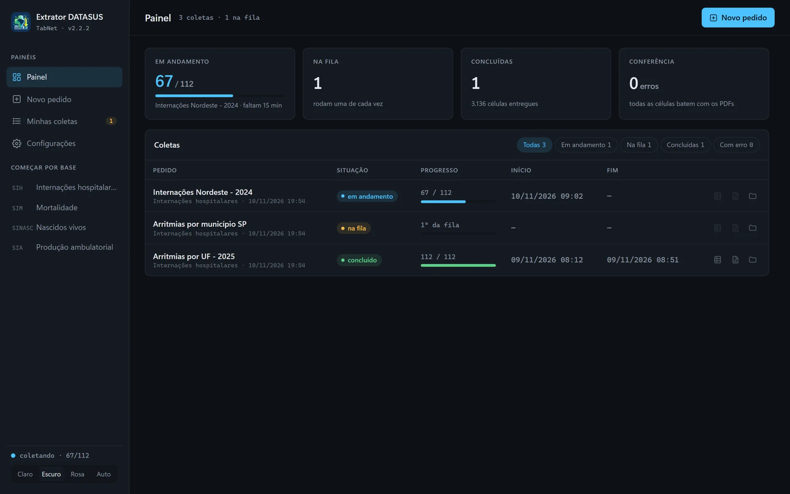
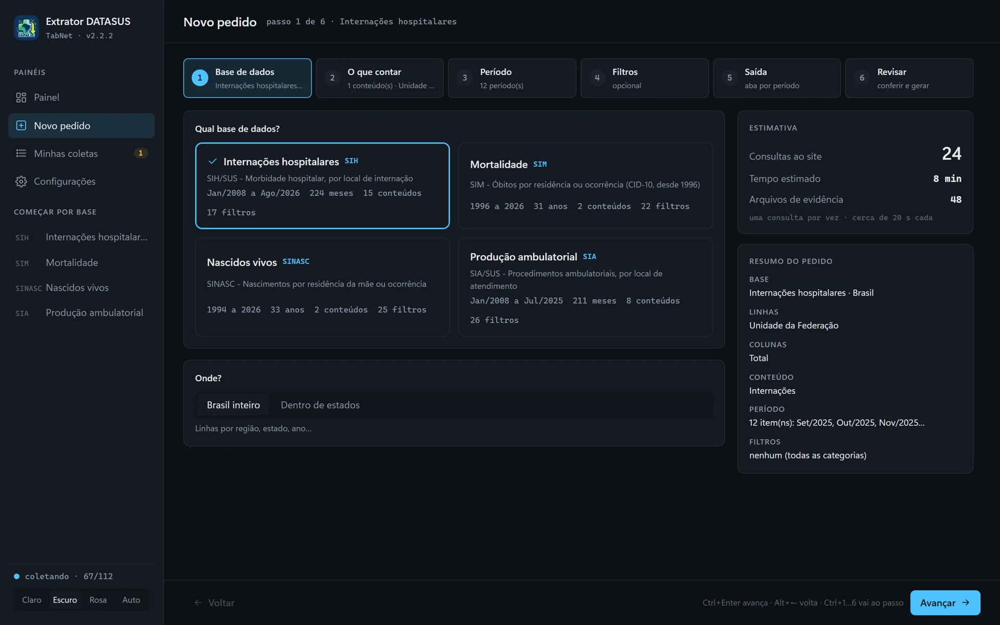
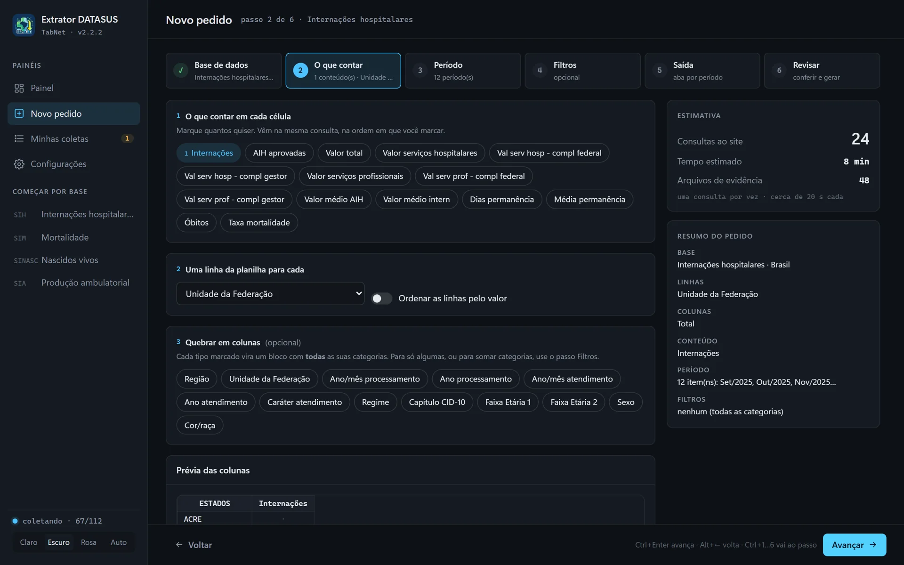
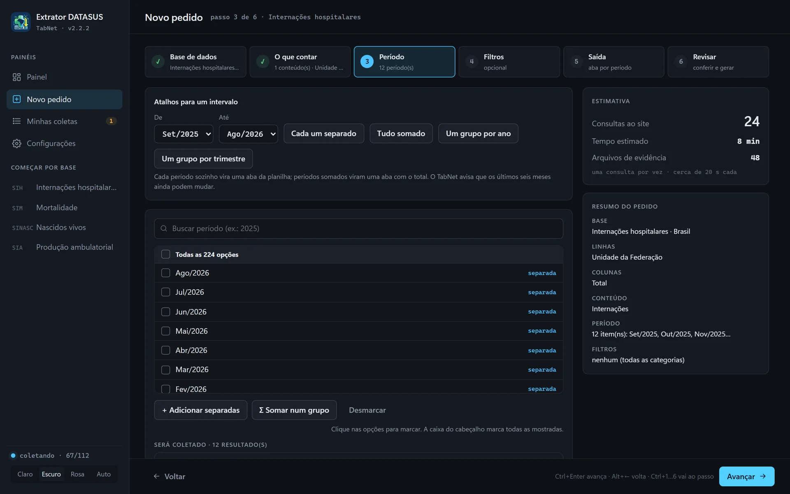
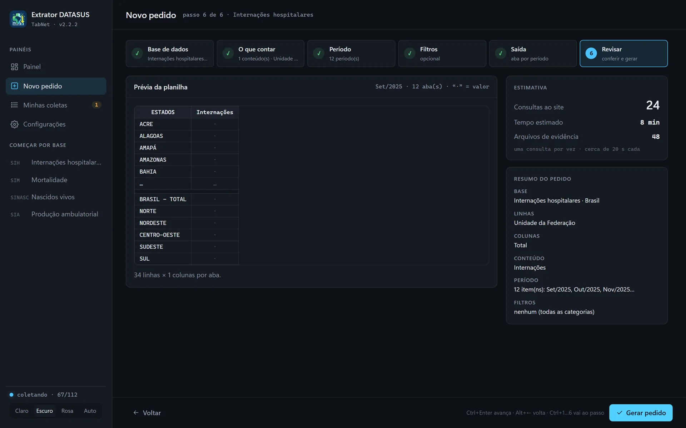
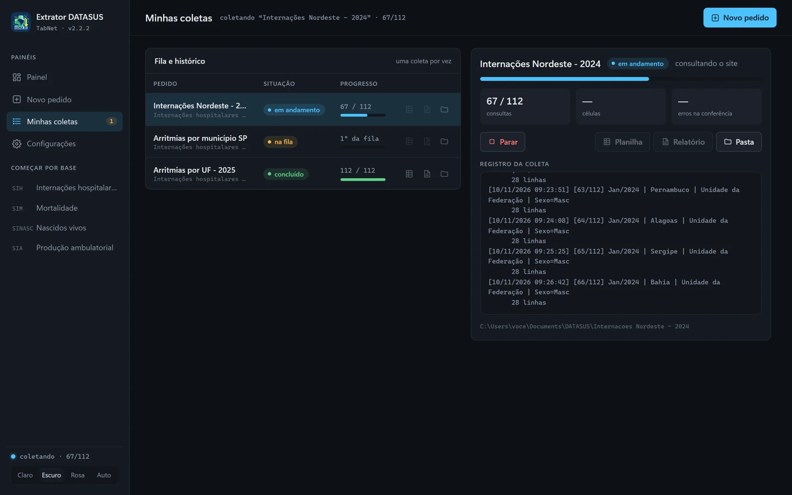
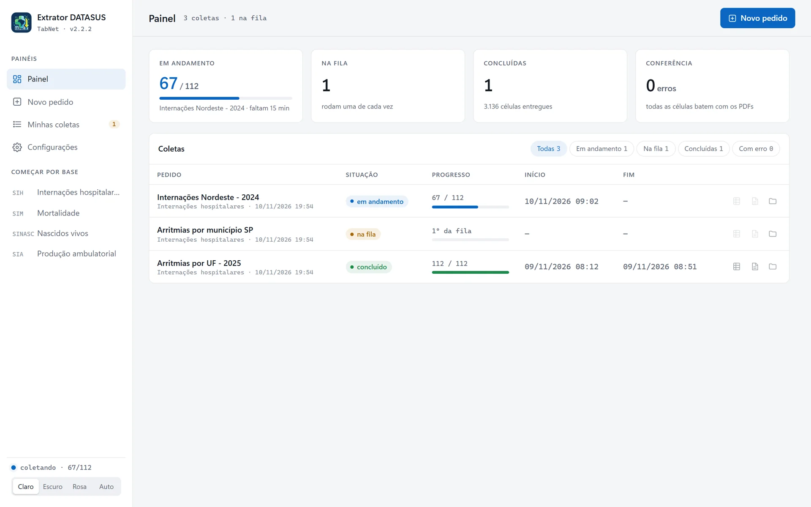

Do TabNet à planilha,com prova
Programa gratuito para Windows que coleta qualquer tabulação de internações, mortalidade, nascidos vivos e produção ambulatorial do DATASUS e entrega uma planilha Excel com o PDF de cada consulta.

Cada número tem a sua prova
O programa preenche o formulário do TabNet como uma pessoa faria, num navegador sem janela, e confere filtros e período em cada resultado antes de guardar.
De cada consulta ficam o PDF e a imagem da página do site, com data, hora e endereço. Na planilha, a aba EVIDÊNCIAS liga cada valor ao seu PDF.
No fim, uma conferência independente relê os PDFs e compara célula por célula. Nenhum número é calculado pelo programa: tudo é o que o próprio site mostrou.
Aqui, um resultado real do TabNet. Clique num número da planilha para ver de onde ele veio.
Planilha
Internações por arritmias cardíacas, Jul/2025
| Estado | Internações | Valor médio |
|---|
Evidência
PDF da consulta no TabNet
Morbidade Hospitalar do SUS - por local de internação - Brasil
Internações, Valor médio intern segundo Unidade da Federação
Lista Morb CID-10: Transtornos de condução e arritmias cardíacas
Período: Jul/2025
Consultado no tabnet.datasus.gov.br · Formulário sih/cnv/niuf.def
A célula tem 1777, o mesmo número do PDF.
Como usar
Escolha a base e onde.
Internações (SIH), mortalidade (SIM), nascidos vivos (SINASC) ou produção ambulatorial (SIA), no Brasil inteiro ou dentro de estados.

Depois, o que contar.
Internações, óbitos, valores… O que vai em cada linha e, se quiser, uma quebra em colunas. As opções vêm do próprio site.

Marque períodos e filtros.
Cada mês ou ano sai separado ou somado num grupo. Filtros por sexo, faixa etária, cor/raça e o que mais o formulário tiver.

Confira a prévia e gere.
Antes de começar você vê a planilha, quantas consultas serão feitas e quanto tempo vai levar.

Acompanhe a coleta.
Uma coleta por vez, com progresso e registro ao vivo. Pode fechar a janela: ela continua, e se parar recomeça de onde estava.

O que você recebe

Na pasta do pedido
- A planilha .xlsxuma aba por período
- Aba EVIDÊNCIASlink do PDF e da imagem
- Pasta evidenciasPDF e PNG de cada consulta
- RELATÓRIO.txtresumo e conferência
O que precisa
- Windows10 ou 11
- Internetpara consultar o site
- Chrome ou Edgeo Edge já vem no Windows
- Pythonnão precisa
Quando o site não tem o dado
- SR, sem resultadolinha zerada ou sem registro
- Traço no sitevira SR (zero)
- Reticências no sitevira SR (não disponível)
Por dentro
- Fila de coletasuma por vez
- Retomadacontinua de onde parou
- Atualizaçãoavisa e instala sozinho
Dúvidas
Como instalo?
Não tem instalador. Baixe o zip, extraia numa pasta (por exemplo, Documentos\Extrator DATASUS) e dê dois cliques em ExtratorDATASUS.exe. Não abra o programa de dentro do zip. A primeira abertura leva alguns segundos a mais.
O Windows diz que protegeu o computador
Acontece porque o programa não tem assinatura digital paga. Clique em "Mais informações" e depois em "Executar assim mesmo". O código é aberto e está no GitHub. Para não ver o aviso, antes de extrair clique no zip com o botão direito, Propriedades, e marque Desbloquear.
Como atualizo?
A partir da versão 2.2, o programa avisa ao abrir quando sai uma versão nova e pergunta se quer instalar. Ele baixa, fecha e abre de novo sozinho. Coletas e histórico continuam como estão.
Os números são confiáveis?
Cada valor é o texto exato que o site mostrou, e a conferência relê os PDFs no fim. Os dados dos últimos seis meses ainda podem ser atualizados pelo DATASUS, então vale coletar de novo mais tarde.
A coleta parou no meio
O site do DATASUS às vezes fica lento ou fora do ar. O programa espera e tenta de novo sozinho, e cada consulta já feita fica salva. Se você parar, em "Minhas coletas" a coleta continua de onde estava.
A janela abre em branco
Instale o "Microsoft Edge WebView2 Runtime", no site da Microsoft. No Windows 11 ele já vem instalado.
Aparece "Nenhum navegador encontrado"
A coleta usa o navegador do computador, sem abrir janela. Instale o Google Chrome ou atualize o Microsoft Edge.
Tem vínculo com o DATASUS?
Não. É um projeto independente, sem vínculo com o DATASUS nem com o Ministério da Saúde, que usa os dados públicos do TabNet. O site é público: use com moderação.
Gratuito e de código aberto
Um zip com o programa, o LEIA-ME e a licença MIT. Sem cadastro, sem instalador, sem Python.
Baixar para WindowsWindows 10 ou 11
Ver o código no GitHub